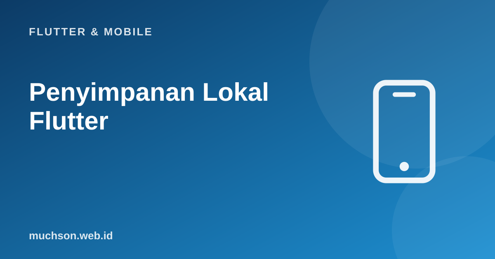

Beranda › Artikel › Flutter & Mobile
Flutter & MobilePenyimpanan Lokal Flutter: Preferences, SQLite, Secure Storage
Aplikasi seluler harus tetap berguna saat sinyal hilang di lift atau terowongan, dan harus mengingat pilihan pengguna antar sesi. Flutter tidak memiliki satu penyimpanan bawaan; Anda memilih sesuai jenis data: pengaturan kecil, rahasia, atau data terstruktur dalam jumlah besar. Salah pilih bisa berarti token tercuri atau aplikasi yang melambat.
Sebaiknya sudah paham: async Dart, JSON dan model Dart

Setelah membaca dan mencoba materi ini, Anda mampu:
- memilih penyimpanan yang tepat untuk setiap jenis data
- memakai shared_preferences untuk pengaturan sederhana
- menyimpan token dan rahasia dengan flutter_secure_storage
- memakai SQLite (sqflite/drift) untuk data relasional dan memahami migrasi skema
- merancang pola offline-first sederhana
Contoh Flutter ditampilkan sebagai kode yang mengikuti dokumentasi Flutter 3.x (Material 3, Dart 3). Bagian logika Dart murni dijalankan sungguhan dengan Dart SDK agar keluarannya dapat dibuktikan; kode yang butuh Flutter (widget) tidak dijalankan di halaman ini.
Memilih penyimpanan
| Data | Pilihan | Alasan |
|---|---|---|
| Pengaturan sederhana (tema, bahasa, sudah melihat onboarding) | shared_preferences | Pasangan kunci-nilai kecil, API mudah |
| Token, kata sandi, kunci | flutter_secure_storage | Memakai Keychain (iOS) dan Keystore (Android) yang terenkripsi |
| Data terstruktur dan relasi, pencarian, banyak baris | SQLite via sqflite, drift | Query SQL, indeks, transaksi, migrasi |
| Objek dokumen tanpa skema ketat | Hive, Isar, ObjectBox | Cepat dan mudah, dengan model data NoSQL |
| Berkas (gambar, PDF, ekspor) | path_provider + dart:io | Direktori dokumen/cache aplikasi |
| Cache respons API | Basis data lokal atau paket cache (dio_cache_interceptor) | Mengurangi permintaan dan mendukung offline |
Jangan menyimpan token atau rahasia di shared_preferences: nilainya tersimpan sebagai teks biasa (XML/plist) yang dapat dibaca pada perangkat yang di-root atau dari cadangan. Gunakan penyimpanan aman untuk apa pun yang sensitif, dan ingat bahwa apa pun yang ada di perangkat pengguna pada akhirnya dapat diakses oleh pengguna itu.
shared_preferences
import 'package:shared_preferences/shared_preferences.dart';
Future<void> simpanTema(bool gelap) async {
final prefs = await SharedPreferences.getInstance();
await prefs.setBool('tema_gelap', gelap);
await prefs.setString('bahasa', 'id');
await prefs.setStringList('pencarian_terakhir', ['kopi', 'teh']);
}
Future<bool> bacaTema() async {
final prefs = await SharedPreferences.getInstance();
return prefs.getBool('tema_gelap') ?? false; // selalu beri nilai bawaan: kunci belum tentu ada
}
// Versi baru (SharedPreferencesAsync / WithCache) tersedia pada paket terbaru; ikuti dokumentasi paket.flutter_secure_storage
import 'package:flutter_secure_storage/flutter_secure_storage.dart';
const _aman = FlutterSecureStorage();
Future<void> simpanToken(String token) => _aman.write(key: 'token_akses', value: token);
Future<String?> bacaToken() => _aman.read(key: 'token_akses');
Future<void> hapusSemua() => _aman.deleteAll(); // saat keluar (logout)
// Praktik: baca token saat aplikasi mulai, simpan di state management (memori), hapus saat logout
// atau saat server menjawab 401. Token berumur pendek + refresh token membatasi dampak kebocoran.SQLite untuk data terstruktur
import 'package:sqflite/sqflite.dart';
import 'package:path/path.dart';
Future<Database> bukaDb() async {
final jalur = join(await getDatabasesPath(), 'toko.db');
return openDatabase(
jalur,
version: 2, // naikkan saat skema berubah
onCreate: (db, versi) async {
await db.execute('''
CREATE TABLE produk (
id INTEGER PRIMARY KEY,
nama TEXT NOT NULL,
harga INTEGER NOT NULL,
diperbarui INTEGER NOT NULL
)''');
await db.execute('CREATE INDEX idx_produk_nama ON produk (nama)');
},
onUpgrade: (db, lama, baru) async { // MIGRASI: ubah skema tanpa kehilangan data pengguna
if (lama < 2) await db.execute('ALTER TABLE produk ADD COLUMN stok INTEGER NOT NULL DEFAULT 0');
},
);
}
Future<void> simpanBanyak(Database db, List<Produk> daftar) async {
await db.transaction((txn) async { // semua atau tidak sama sekali; jauh lebih cepat
for (final p in daftar) {
await txn.insert('produk', p.keMap(), conflictAlgorithm: ConflictAlgorithm.replace);
}
});
}
Future<List<Produk>> cari(Database db, String kata) async {
final baris = await db.query('produk', where: 'nama LIKE ?', whereArgs: ['%$kata%'], orderBy: 'nama', limit: 50); // selalu pakai whereArgs
return baris.map(Produk.dariMap).toList();
}Alternatif modern: drift (dahulu Moor) memberi query bertipe aman, migrasi terpandu, dan aliran reaktif di atas SQLite, sehingga UI otomatis diperbarui saat data berubah. Untuk skema yang berkembang, drift sering lebih nyaman daripada sqflite mentah.
Pola offline-first
// Inti sinkronisasi: ambil dari server lalu perbarui lokal; baca selalu dari lokal. Peragaan dengan Dart murni.
class Server {
final Map<int, String> data = {1: 'Kopi', 2: 'Teh', 3: 'Gula'};
Future<Map<int, String>> ambil() async => Map.of(data);
}
class DbLokal {
final Map<int, String> data = {};
final List<int> antreanHapus = [];
}
class Repo {
Repo(this.server, this.lokal);
final Server server; final DbLokal lokal;
bool online = true;
Map<int, String> bacaLokal() => lokal.data; // UI membaca dari sini
Future<void> sinkron() async {
if (!online) { print(' (offline: sinkronisasi ditunda)'); return; }
final dariServer = await server.ambil();
lokal.data..clear()..addAll(dariServer); // upsert; di praktiknya bandingkan versi/waktu pembaruan
print(' disinkronkan: ${lokal.data.length} item');
}
}
Future<void> main() async {
final repo = Repo(Server(), DbLokal());
print('buka aplikasi (data lokal kosong): ${repo.bacaLokal()}');
await repo.sinkron();
print('tampil: ${repo.bacaLokal()}');
repo.online = false; // sinyal hilang
print('offline, aplikasi tetap menampilkan: ${repo.bacaLokal()}');
await repo.sinkron();
}buka aplikasi (data lokal kosong): {}
disinkronkan: 3 item
tampil: {1: Kopi, 2: Teh, 3: Gula}
offline, aplikasi tetap menampilkan: {1: Kopi, 2: Teh, 3: Gula}
(offline: sinkronisasi ditunda)
Hal praktis
- Versi dan migrasi: rencanakan sejak awal; uji pembaruan dari versi lama.
- Jangan menyimpan data pribadi sensitif tanpa alasan; terapkan prinsip minimisasi dan hapus saat logout.
- Cadangan platform: Android Auto Backup dapat menyalin data aplikasi; kecualikan berkas sensitif.
- Enkripsi basis data (SQLCipher) bila menyimpan data sensitif secara lokal.
- Ukuran dan kinerja: indeks, transaksi untuk penyisipan massal, dan jangan membaca ribuan baris ke memori sekaligus (paginasi).
1. Data apa yang cocok di shared_preferences dan apa yang tidak?
2. Aplikasi sudah dirilis dengan tabel produk(id, nama). Anda menambah kolom harga. Apa yang dilakukan?
3. Mengapa transaksi mempercepat penyisipan ribuan baris?
4. Bagaimana menangani konflik saat dua perangkat mengubah data yang sama?
- Pilih penyimpanan menurut data: shared_preferences (pengaturan), secure storage (rahasia), SQLite/drift (terstruktur), berkas (path_provider).
- Jangan menyimpan rahasia di preferences; hapus saat logout.
- Migrasi skema (onUpgrade) melindungi data pengguna saat pembaruan.
- Offline-first: UI membaca dari basis data lokal, sinkronisasi di latar belakang, antrean perubahan.